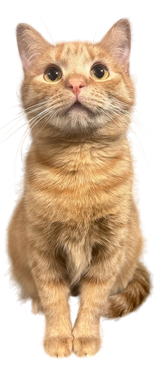

Правила передачи
питомца
Всего в приюте сейчас живёт 0 кошки, которые ждут своего человека
Чтобы обеспечить безопасность и комфорт наших подопечных в их новой жизни, мы разработали правила передачи животных. Пожалуйста, внимательно ознакомьтесь с ними перед подачей заявки.
- Животные передаются на основании договора о передаче животного. Обязательно проводится предварительное собеседование.
- Животное передаётся новому владельцу только после прохождения процедуры стерилизации или кастрации.
- Животные отдаются только в собственное жилье. При съёмном жилье требуется письменное согласие собственника.
- Животные НЕ отдаются в частные дома, расположенные в черте города.
- Необходимо согласие всех членов семьи, проживающих совместно.
- Возраст владельца должен быть примерно от 25 до 60 лет. Для пожилых людей возможны исключения при наличии письменного согласия родственников.
- Приют отслеживает судьбу переданного животного. Новый владелец обязуется предоставлять информацию по запросу (звонки, фотографии).
- При невозможности дальнейшего содержания животного подлежит возврату в приют. Запрещается выбрасывать или усыплять животное.
- Владелец обязуется обеспечивать регулярное ветеринарное обслуживание и использовать корма не ниже премиум-класса.
- Запрещается любое физическое насилие над животным.
- Животные передаются строго в переносках. Забирать животное на руках, в куртке или корзинке запрещено.
- Приют оставляет за собой право отказать в передаче животного без объяснения причин.

Данные правила не служат для запугивания или унижения будущих владельцев. Они направлены на обеспечение безопасности и комфорта будущей жизни наших подопечных.
Главное правило — любить и защищать тех, кто зависит от Вас.